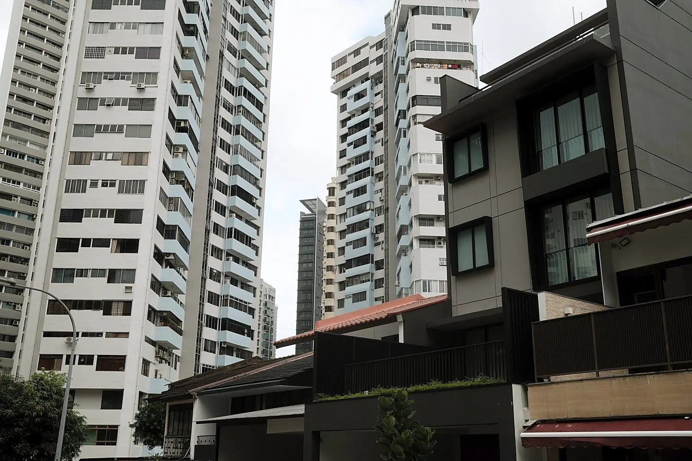

Living near Orchard Road.
22 Jalan Elok is on a quiet residential street in District 9, a 5-minute walk from Orchard Road and a 10-minute walk from Orchard MRT. Here is what the location means day to day, whether you are coming for work, for study or relocating to Singapore.

Quiet at home, the city on foot.
Jalan Elok is a quiet residential street in District 9 (Orchard / River Valley), postcode 229060.
Orchard Road is a 5-minute walk away. Orchard MRT station, under ION Orchard, is a 10-minute walk and serves two lines: the North–South Line (NS22) and the Thomson–East Coast Line (TE14). Changi Airport is 25 minutes away by car or taxi.
Get directions →Two MRT lines, one station.
From Orchard MRT, a 10-minute walk away, trains run to Raffles Place, Shenton Way and Marina Bay without a change.
Where the trains go.
North–South Line
- Raffles Place (CBD): 4 stops, no change
- Dhoby Ghaut: 2 stops
- Change at Dhoby Ghaut for the North East and Circle lines
Thomson–East Coast Line
- Maxwell, Shenton Way and Marina Bay, no change
- Napier: 2 stops
- Napier is next to the Singapore Botanic Gardens, a UNESCO World Heritage Site
Changi Airport
- 25 minutes to Changi Airport by car or taxi
- By MRT: North–South Line to City Hall (3 stops), then the East–West Line to Tanah Merah
- At Tanah Merah, change to the airport branch (via Expo) for Changi Airport station (CG2), at Terminals 2 and 3
For work, for study, for a new start.
Professionals & expats
- A workspace in every room
- High-speed wifi throughout
- Raffles Place (CBD) 4 stops away, no change
- Can be rented through your company (ACRA UEN needed)
Students
- Student’s Pass holders welcome
- Same terms as everyone: a tenancy agreement, 3-month minimum
- Rent is per room: two students can share a Deluxe Twin
- Orchard MRT is a 10-minute walk
- A workspace in every room
Moving to Singapore
- Book from overseas, before you arrive
- Photos and a floor plan of every room
- Someone you trust can view the room for you
- Furnished and move-in ready
- Utilities and high-speed wifi included
Out and about.
Whatever you’re into, here’s where to spend your days off. Tap any spot for a short guide and directions from the house.
Attraction junkie
Nature lover
Foodie
Culture and history buff
Night owl
Before you go
- Routes start at the house, with a 10-minute walk to Orchard MRT
- Opening hours, prices and routes change, so check before you go
- For trips abroad, bring your passport and make sure your Singapore pass is valid for your return
Make it home.
Nine furnished ensuite rooms, from S$3,000 a month (negotiable). Utilities and high-speed wifi are included. Minimum stay three months.